ОГЭ по информатике
100% правильный путь решения
ОГЭ по информатике очень простое! Главное правильно его понять, хорошо подготовиться и всё решить! В этой статье я расскажу, как правильно подготовиться к ОГЭ по информатике и разберём все задачи (даже вторую часть)!
Как правильно готовиться?
Многие боятся программирования и всего что с ним связанно и нельзя не скачать, что любую работу на компьютере считают за программирование! Но это не так. В ОГЭ по информатике где-то 60% от математики, и только 5-10% от чистого программирования! Так что эту мысль можно сразу отбросить!
Так как же правильно готовиться? Ответ расскажу в нескольких пунктах:
1. Учите математику. Не надо учить много, достаточно выучить базовые операции: степени (СТЕПЕНИ ДВОЙКИ ЗАЗУБРИТЬ ХОТЯ БЫ ДО 4096!!!)
2. Выучите азы Python. Задание 16 дастся вам только если Вы будете знать какой-нибудь язык программирования, а Python – это самый простой и надёжный вариант. И опять подчеркну выучите АЗЫ! Не надо учить замеренные Tkinter`ы и прочие ненужные для ОГЭ элементы. Выучите основные действия с переменными, условия, циклы и типы переменных, ВСЁ!!!
3. Научитесь работать с Excel. В Excel вам понадобятся знания основных формул и умения строить диаграммы. ВСЁ!!!
4. И порешайте несколько вариантов, например все!
Разбор задач
1 задача
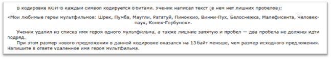
Начнём разбор: один символ – это 8 бит, 8 бит – это 1 байт. Сообщение стало меньше на 13 байт, значит на 13 символов. 2 символа – это запятая и пробел, следовательно ищем имя персонажа из 11 символов.
2 задача
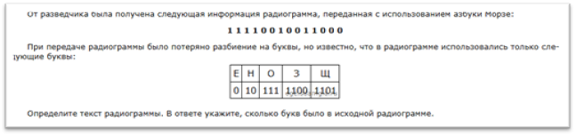
Я думаю, что эта задача слишком простая, чтобы я её объяснял. Просто подбираем буквы методом подбора (перебора).
3 задача

Это типичная задача на условия. В задачах такого рода надо избавится от НЕ. Переделаем условие и получим: (х оканчивается на 7) И (х <= 119). В задаче написано, что нужны трёхзначные числа, следовательно подходят только числа 107 и 117.
4 задача

Сначала построим схему:
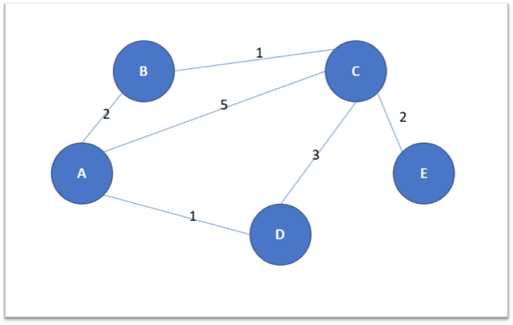
Нам надо пройти из города А в город Е. Посмотрим пути:
A – B – C – E (2 + 1 + 2)
A – C – E (5 + 2)
A – D – C – E (1 + 3 + 2)
Здесь не подходит путь A – B – C – A – D – C – E, потому что мы возвращаемся по графу к начальной точке или к точкам, близким к ней, это точно не оптимальный путь, поэтому ищем оптимальный путь по путям выше.
Получаем, что самый кратчайший путь A – B – C – E = 5 км.
Ответ: 5
5 задача
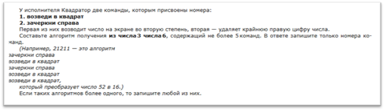
Здесь видим 2 функции исполнителя: возвести в квадрат (1) и зачеркнуть цифру справа (2). Идём от числа 3 в число 6. Здесь на каждом шаге надо просчитывать какой из шагов нас приведёт к ответу, пример:
Возвести в квадрат (число 3) = 9
Зачеркнуть справа (число 3) = 0
Здесь несложно догадаться, что нам подходит функция возведения в квадрат, по такому же принципу довешиваем задачу:
3 – 9 – 81 – 8 – 64 – 6
1 1 2 2 1
Ответ: 11221
6 задача
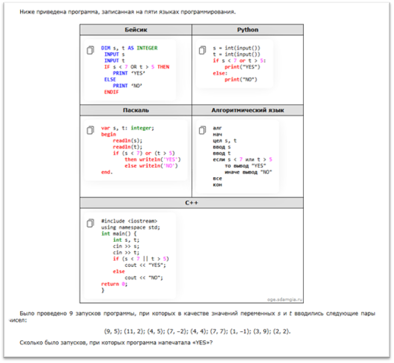
Здесь даётся программа, написанная на нескольких языках программирования. Давайте рассмотрим код именно на Python, ведь для ОГЭ лучше всего использовать именно его (я это уже говорил). Программа получает на вход два числа: s и t типа integer, т.е. число. В задаче говориться, что надо посчитать на скольких запусках из 9 программа вывела «YES». Смотрим, когда программа выведет «YES»: if s < 7 or t > 5, это значит, что это условие (в котором написано то самое «YES») выполнится, когда s будет меньше 7 ИЛИ t будет больше 5. Первое число во входных данных это s, а второе это t, ведь программа сначала принимает на вход s, а потом t. Считаем:
(9, 5) – NO, t = 9 > 7 и s = 5 <= 5
(11, 2) – NO, t = 11 > 7 и s = 2 <= 5
(4, 5) – YES, t = 4 < 7 и s = 5 <= 5 (хоть 5 и не больше 5, но все равно программа выведет YES потому что используется условный оператор ИЛИ, который означает, что для выполнения всего условия нужно, чтобы хотя бы одно из равенств, неравенств было верным)
Таким образом досчитываем всю задачу и получаем ответ.
7 задача
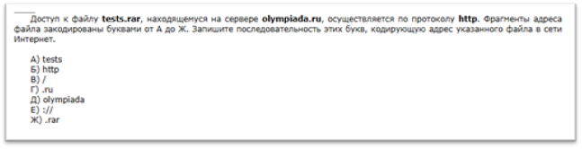
В этой задаче надо знать строение http\https ссылок. Откройте любой сайт в вашем браузере и изучите строение ссылки на него. Ответом на задачу будет: http://olympiada.ru/tests.rar, по буквам: БЕДГВАЖ
8 задача

Это задача на круги Эйлера, сначала начертим схему:
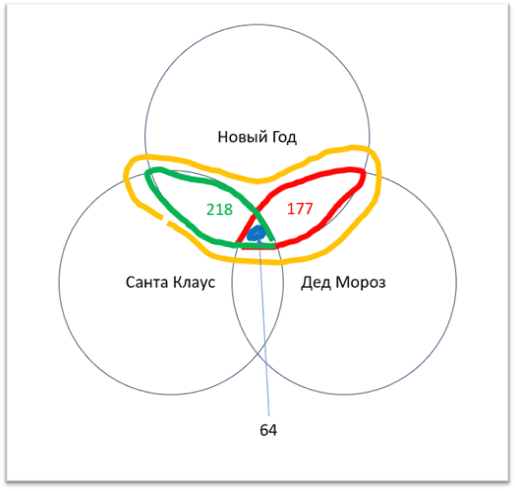
Здесь мы получаем, что НГ и ДМ – это красный, НГ и СК – это зелёный, два этих множества пересекаются и получаем НГ и ДМ и СК – синяя область – 64. Нам надо найти НГ и (ДМ или СК). Сначала разберёмся, что такое ДМ или СК – это оба круга ДМ и СК. А подходит нам только то, что пересекается с НГ – это оранжевая область. Складываем 177 + (218 - 64), получаем 331 тыс. страниц будет найдено.
9 задача
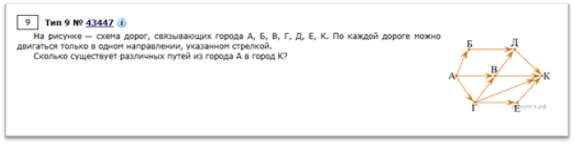
Здесь надо найти все возможные маршруты от А к К перебором. Но при этом важно заметить, что можно двигаться только по направлению стрелок. Ответ: 10 путей.
10 задача
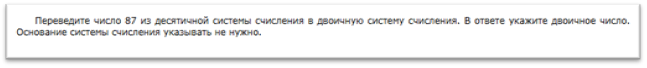
Переводим 87 из 10-чной системы в 2-чную:
8710 = 6410 + 1610 + 4 10+ 210 + 110 = 26 + 24 + 22 + 21 + 20
У нас получились степени двойки: 6-я, 4-я, 2-я, 1-я, 0-я, записываем единицы в эти разряды:
11101012, далее переворачиваем число, получаем: 10101112
11 задача

Здесь организатор экзамена предоставит нам файл DEMO-11.rar, который надо распаковать, после распаковки надо перейти в подкаталог «Проза», в подкаталог «Гоголь»: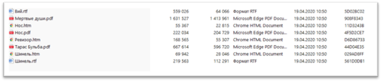
Здесь может повести и при открытии данной папки в CMD (командной строке Windows) может быть правильная кодировка и можно попробовать следующую команду:
Но у меня с кодировкой что-то не так и поэтому результат:
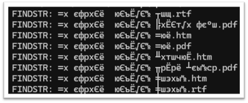
Если проблема с кодировкой, то запускаем не PowerShell как это сделал я по глупости, а запускаем командную строку ИМЕННО В ЭТОЙ ДИРЕКТОРИИ (т.е. должно быть так):
Потом вводим команду: chcp1251. Эта команда сменит кодировку и мы сможем получить сообщение:
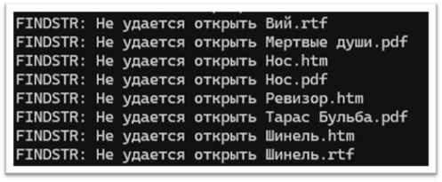
Здесь только остаётся надеется, что findstr откроет файл и всё получится. Если повезёт, то вы увидите в каких файлах найдено слово «вицмундир». В этих файлах можно будет начать поиск вручную. Если тоже проблема, то есть такой вариант решения: заходим в каждый файл, нажимаем Ctrl+F и в открывшемся окне вводим слово или слова для поиска в нашем случае «вицмундир», потом находим кто им интересовался и снова делаем поиск и находим, что он был портным.
12 задача
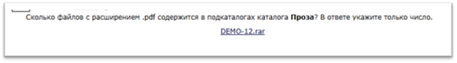
Здесь задача очень простая. Снова распаковываем новый архив и заходим в каталог проза:
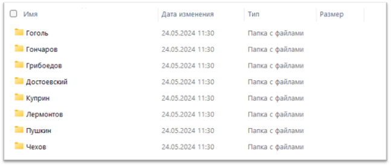
Видим строку поиска сверху слева в проводнике:
Вводим запрос поиска, поскольку мы ищем файлы pdf, то запрос будет такой:
Звёздочка (*) означает что строка может быть любой, в данном случае, поскольку это до точки, что это название файла, а .pdf – это расширение файла, оно любым быть не может, поэтому вставляем .pdf. Дальше не считайте файлы вручную, а посмотрите на нижний левый угол:
Вот и ответ на задачу, 16 файлов pdf!
!!!ВАЖНО!!!
Когда я решал один из вариантов надо было посчитать фалйы .doc, а поиск мне выдал ещё и файлы .docx, поэтому будьте внимательней и проверьте то ли расширение у файлов!!!
13 задача
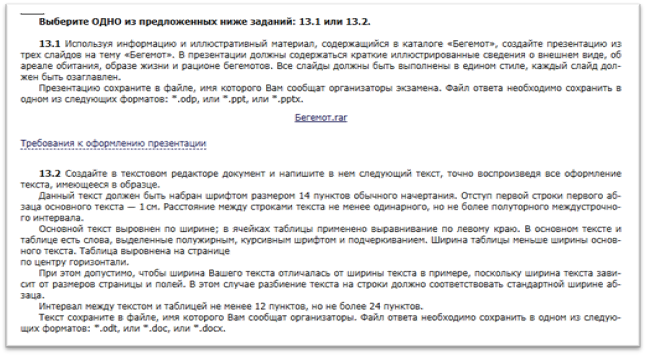
В этой задаче очень строгие критерии оценивания: если вы выделяете текст жирным цветом, то если вы выделите точку в конце предложения тоже жирным, то будет или -1 балл или вообще всё задание в 0 баллов, так что следите за выделением! В этой задаче я рекомендую делать презентацию, ведь это гораздо проще и с меньшими требованиями чем к тексту.
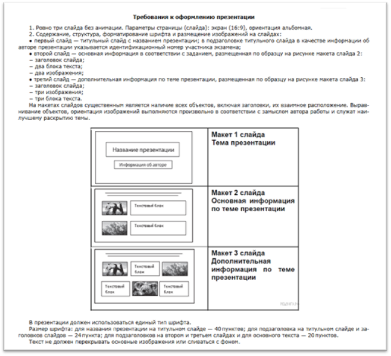
Важно прочитать требования к оформлению презентации!!!
В итоге должно получиться что-то такое:
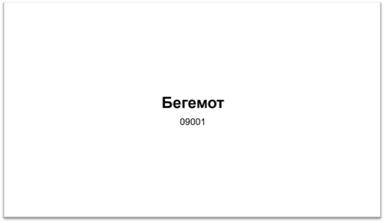
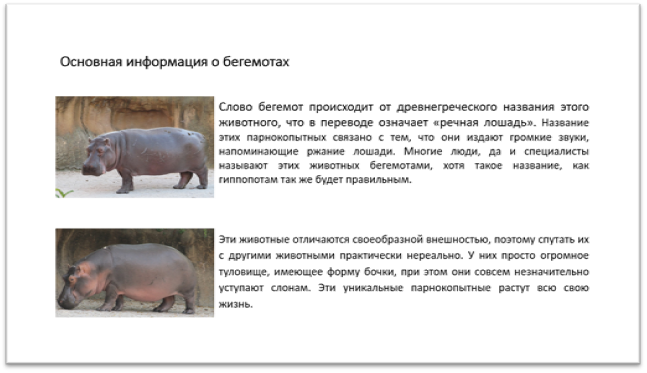
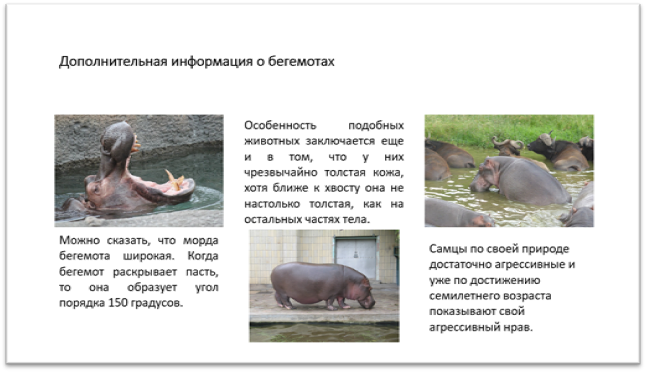
Здесь важно помнить информацию о размере шрифта. И то, что шрифт на всех слайдах должен быть одинаковый (не размер, а шрифт). Текст будет в word файле. Советую брать через абзац, за исключением второго слайда. И ещё: любителям анимаций и переходов придётся отказаться от этих эффектов!!! Вот полные требования:
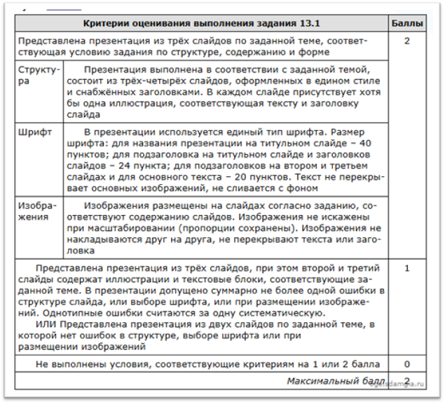
14 задача
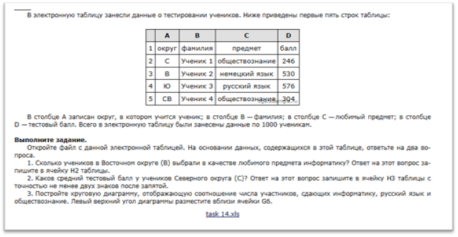
Здесь важно заметить, что у нас 1000 учеников и вручную считать ТОЧНО НЕ НАДО!!!! Открываем excel и видим:
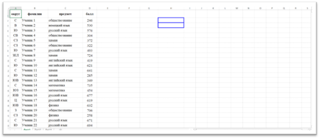
Подзадача номер 1:
Надо понять сколько учеников в В округе выбрали информатику. Здесь действуем через фильтры. Выделим шапку таблицы (округ, фамилия, предмет, балл) и нажмём на «фильтр» в правом верхнем углы программы:
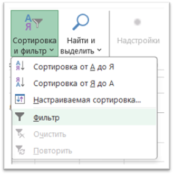
В шапке таблицы должны появиться фильтры:
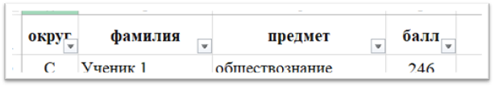
Делаем сортировку по округу В и предмету Информатика:
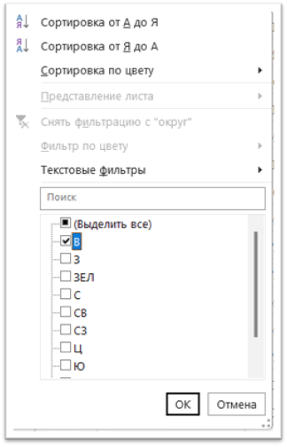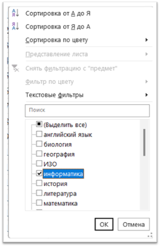
И видим:
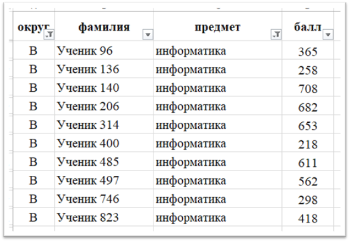
По фильтру отобразились только 10 учеников.
Подзадача номер 2 (не забудьте сбросить фильтры выбрав «(Выделить всё)»):
Надо найти средний балл у учеников С округа.
Ставим фильтр на С округ:
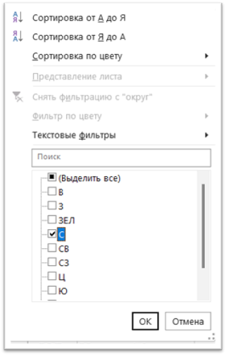
И в любую ячейку (желательно в выделенную H3, если она не скроется фильтром) пишем формулу: «=СРЗНАЧ(» дальше выделяем первую язейку со средним баллом. С округа, затем нажимаем Shift и с ЗАЖАТЫМ Shift`ом выделяем последнюю ячейку
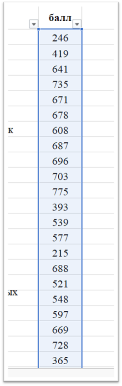
Дальше закрываем скобку в формуле «)», должно получиться что-то такое:
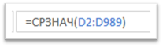
Запоминаем значение в клетке (у меня это 525,841) и сбрасываем фильтр и вставляем в ячейку H3. (С 2 знаками после запятой, по заданию!!!). Тут не знаю почему, но мой ответ не сходится с ответом на сайте, возможно у них ошибка, но мы же всё правильно посчитали)
Подзадача номер 3:
Строим круговую диаграмму соотношения информатиков, русско-язычников и обществознателей. Делаем мини таблицу на этом листе:
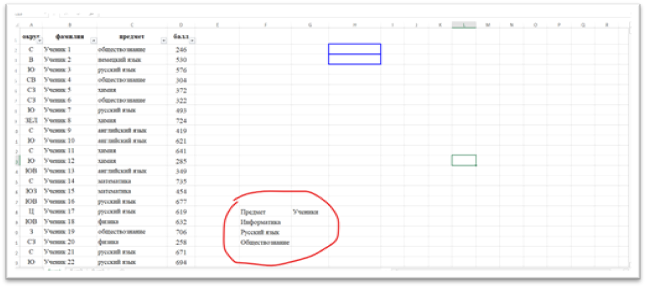
Дальше на пересечении предмета и учеников вставляем формулу:
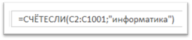
Здесь C2 – это первая ячейка в которой написан предмет, поскольку учеников у нас 1000, а предметы начинаются со второй ячейки, то финальная ячейка будет C1001. Дублируем формулу в другие ячейки таблицы, заменяя информатику на русский язык или обществознание, результат: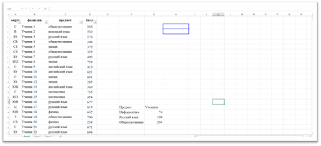
Далее выделяем всю НАШУ таблицу:
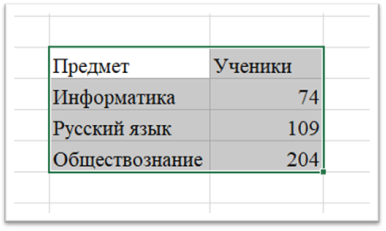
Заходим в меню «Вставка» и «выбираем вставить круговую диаграмму»:
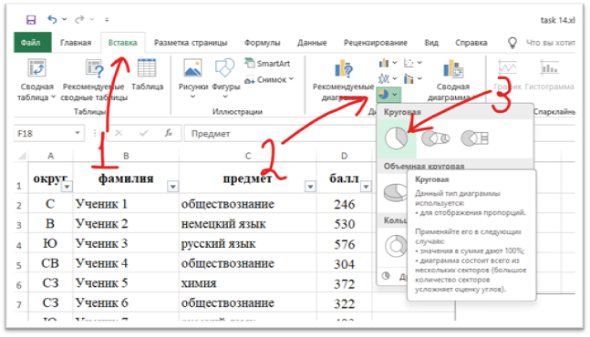
Результат:
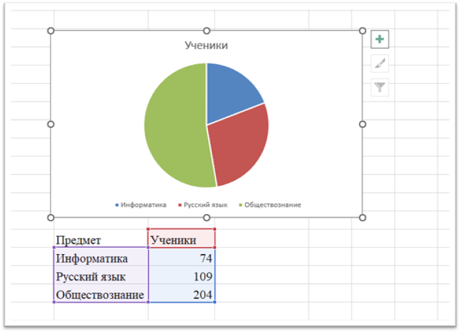
Далее, как написано в задании выравниваем верхний левый угол диаграммы по ячейке G6:
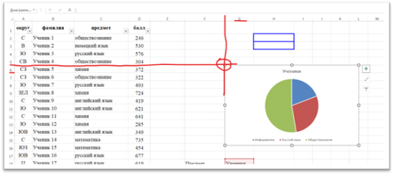
Дальше необходимо сохранить файл excel, я точно не помню под каким именем, организаторы экзамена, по идеи, должны сказать.
15 задача
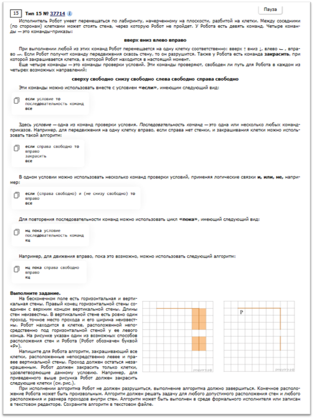
Это задача на КуМир. Вообще КуМиром пользоваться на ОГЭ, говорят, запрещено, но в качестве тренировки можно) Открываем КуМир и делаем новую обстановку. Да, кстати, КуМир качаем с официального сайта: https://www.niisi.ru/kumir/dl.htm.
Создаём обстановку для РОБОТА (обычно подходит обстановка 20 на 20 клеток):
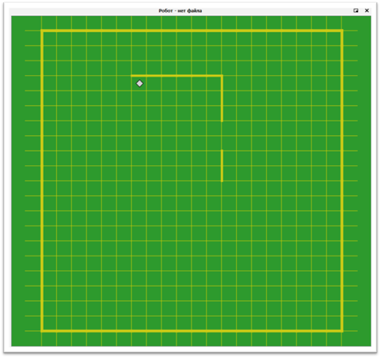
Дальше пишем код (Очень важно, чтобы код работал для фигур разного размера, нельзя задавать фиксированное количество шагов, всегда используйте циклы с улсовиями!!!)
Получаем:
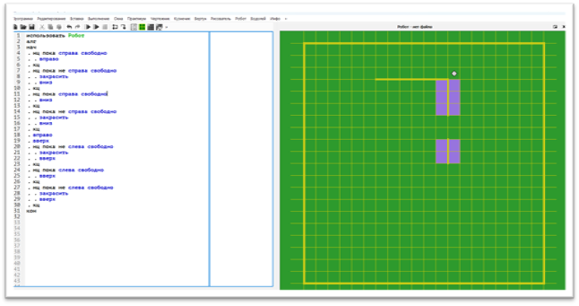
Очень важно самостоятельно поизучать КуМир и разобраться в этом коде, не просто скопировать его, а именно ПОНЯТЬ!
16 задача
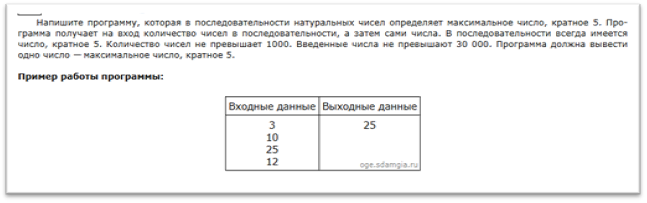
Здесь надо написать программу. Скорее всего можно будет пользоваться языками программирования (Я ОЧЕНЬ НАДЕЮСЬ!!!). Поэтому прямо сейчас начинайте учить Python! В этой задаче мы получаем на вход первое число: количество последующих чисел:
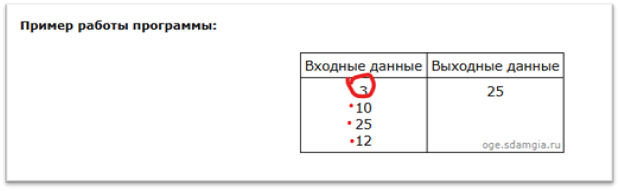
Из следующих (в данном случае 3-х чисел) надо понять, какие из них являются кратными 5-ти и вывести максимальное такое число. Если делать код на Python, получится так:
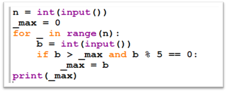
Если уж хочется выпендриться и можно так сделать на экзамене, можно написать на плюсах (С++):
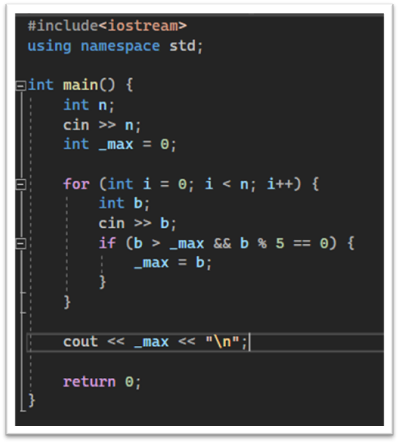
Если будете решать эту задачу, то на сайте есть даже тесты, для проверки:
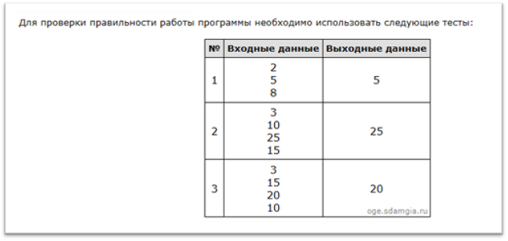
Удачи!
Мы разобрали весь 8-ой вариант ОГЭ 2025 года, желаю удачи вам в подготовке и самом ОГЭ, удачи!